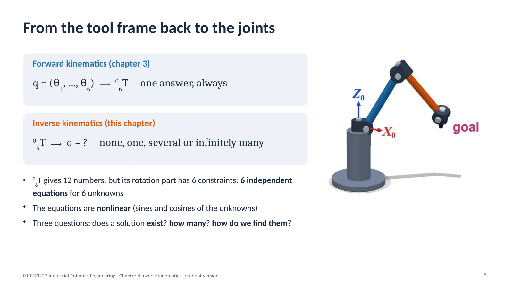
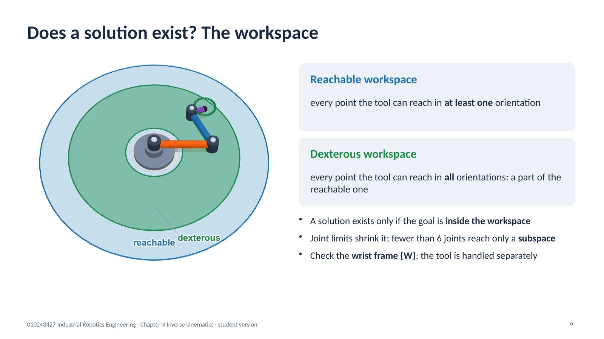
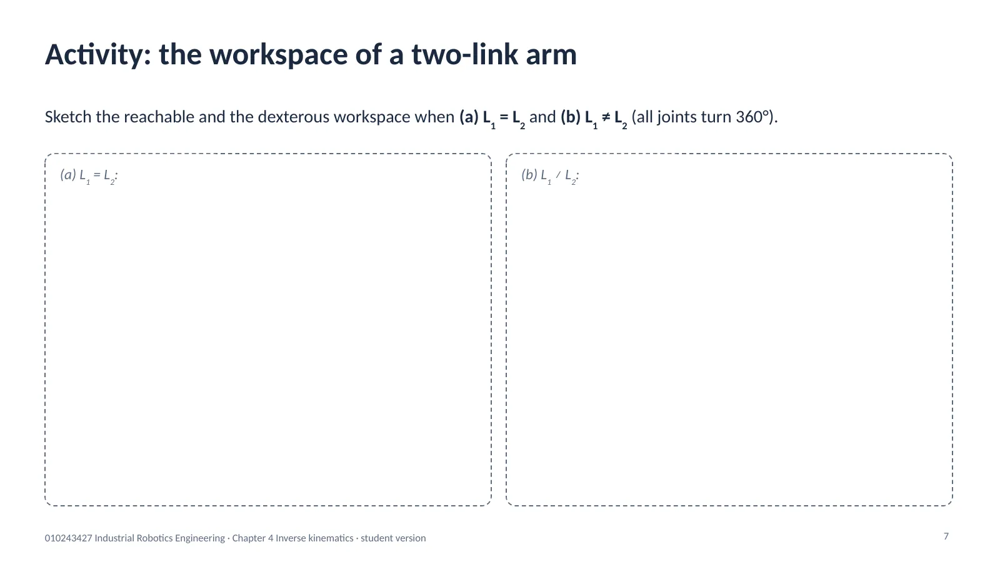
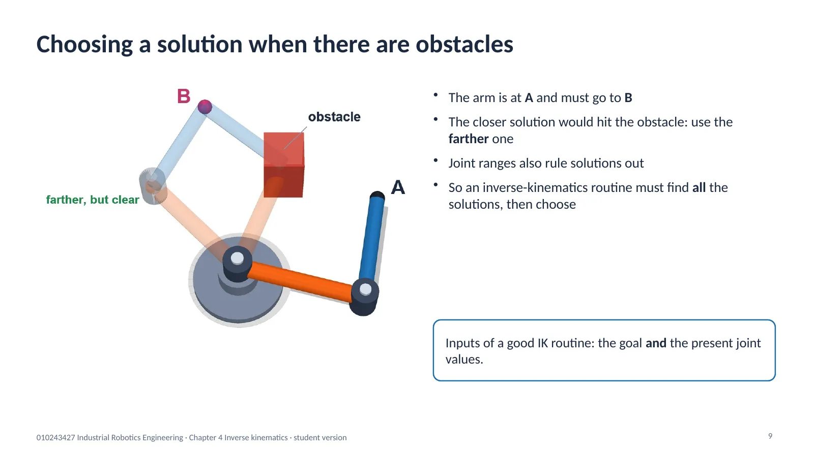
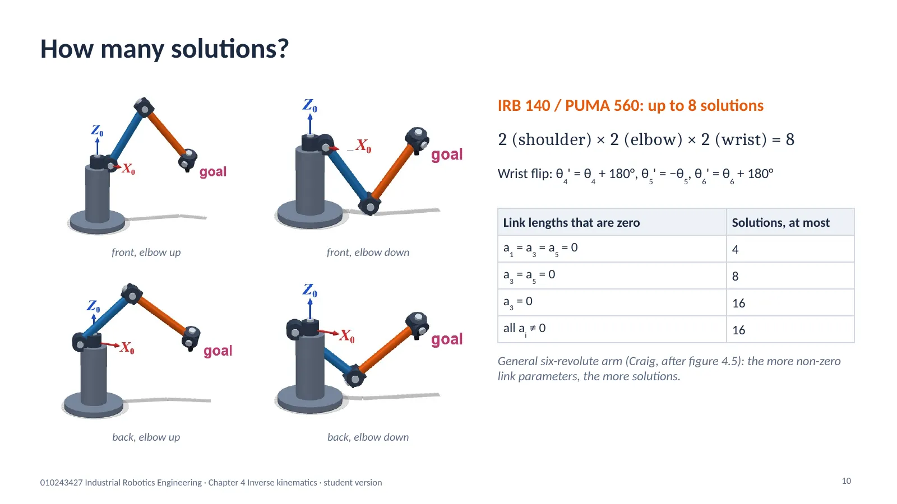
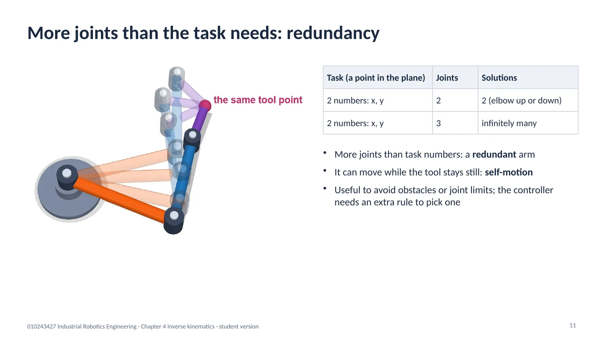

จลนศาสตร์ไปข้างหน้า (บทที่ 3) มีคำตอบเดียวเสมอ แต่ย้อนกลับจากเฟรมของเครื่องมือไปหามุมข้อต่ออาจ ไม่มีคำตอบ (เป้าหมายอยู่นอกปริภูมิทำงาน) มีหลายคำตอบ (ต้องเลือก) หรือ มีไม่จำกัด (แขนมีข้อต่อเกินงาน) หน้านี้ตอบสามคำถามก่อนลงมือแก้สมการ ครอบคลุมสไลด์หน้า 5–13 มี เครื่องมือ 1 ชิ้น (A) และ 4 โจทย์
Forward kinematics (chapter 3) always has one answer, but going back from the tool frame to the joint angles may have no solution (the goal is outside the workspace), several (one must be chosen) or infinitely many (more joints than the task needs). This page answers those three questions before any equation is solved. It covers slides pp. 5–13, with one tool (A) and 4 problems.

พื้นสีฟ้าคือที่ที่ปลายแขนไปถึงได้: วงแหวนระหว่าง |L₁ − L₂| กับ L₁ + L₂ ลากเป้าหมายไปมา ภายในวงแหวนมีสองท่า (ทึบและโปร่ง) บนขอบเหลือท่าเดียว นอกวงแหวนไม่มีเลย ลองตั้ง L₁ = L₂ แล้วลากเป้าหมายเข้าใกล้จุดกำเนิด
The blue floor is where the end of the arm can go: the ring between |L₁ − L₂| and L₁ + L₂. Drag the goal around: inside the ring there are two poses (solid and see-through), on its edge only one, outside none. Set L₁ = L₂ and bring the goal near the origin.



